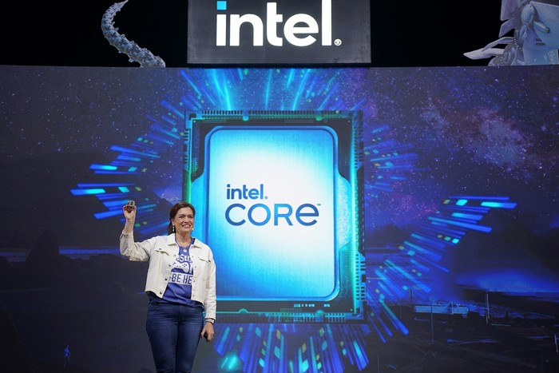

Jumat, 18 Okt 2024 11:44 WIB
Beijing - Perang dagang dan teknologi antara Amerika Serikat dan China berpotensi membawa korban baru, yaitu raksasa chip Intel. Padahal Intel saat ini sedang kesulitan secara bisnis karena kurang dapat beradaptasi di tengah perkembangan zaman. Ini mungkin juga bentuk balas dendam China yang perusahaan teknologinya sering mendapat sanksi dari AS.
Produk Intel yang dijual di China direkomendasikan ditinjau keamanannya oleh asosiasi dagang setempat yang berpengaruh, Cybersecurity Association of China (CSAC). Mereka menuduh pembuat chip AS itu menimbulkan risiko serius terhadap keamanan nasional.
Mereka mengemukakan dugaan kerentanan dalam chip CPU Intel, di mana kurangnya kualitas produk dan manajemen keamanan menunjukkan sikap tak bertanggung jawab. CSAC menuduh Intel memakai fitur manajemen jarak jauh untuk mengawasi pengguna, diam-diam memasang backdoor, serta gagal mengatasi cacat yang dilaporkan pengguna.
"Disarankan agar tinjauan keamanan dimulai pada produk-produk yang dijual Intel di China, sehingga dapat efektif melindungi keamanan nasional China dan hak serta kepentingan sah konsumen China," kata CSAC. CSAC menyatakan sistem operasi yang tertanam di semua prosesor Intel rentan terhadap backdoor yang dibuat Badan Keamanan Nasional AS atau NSA. "Ini menimbulkan ancaman keamanan besar terhadap infrastruktur informasi penting di seluruh dunia, termasuk China. Penggunaan produk Intel menimbulkan risiko serius terhadap keamanan nasional," kata CSAC.